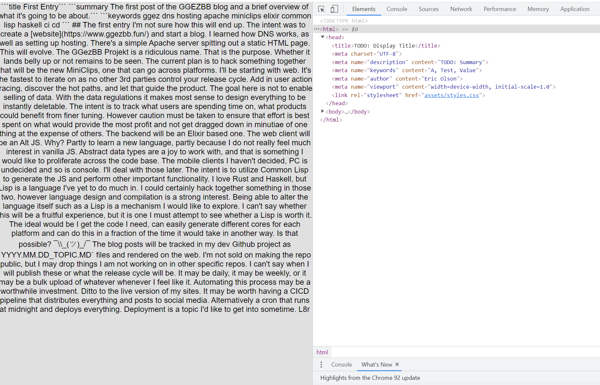

Right now the HTML is all empty. I'll wire up the Html trait to the generator now.
I'll start by implementing the most simple Element. This is strictly a placeholder.
// html/element.rs
use super::Html;
#[derive(Clone, Debug, PartialEq)]
pub enum Element {
Text(String),
}
impl Html for Element {
fn to_html(&self) -> String {
match self {
Element::Text(s) => s.clone(),
}
}
}
pub fn text(s: &str) -> Element {
Element::Text(s.into())
}
I'll also update the CssLink module.
// html/css_link.rs
use super::Html;
#[derive(Clone, Debug, PartialEq)]
pub struct CssLink(String);
impl Html for CssLink {
fn to_html(&self) -> String {
format!("<link rel=\"stylesheet\" href=\"{}\">", self.0)
}
}
impl From<String> for CssLink {
fn from(s: String) -> Self {
Self(s)
}
}
The Md module requires some updates as well. I'll add in keywords, display_title and summary fields.
// parser/md/mod.rs
mod filename;
use super::IntermediateRepresentation;
use crate::{Item, Location, Res};
#[derive(Clone, Debug, PartialEq)]
pub struct Md {
pub contents: String,
pub date: String,
pub day: String,
pub default_title: String,
pub display_title: String,
pub html_file_name: String,
pub keywords: Vec<String>,
pub month: String,
pub path: String,
pub summary: String,
pub year: String,
}
pub fn parse(file_path: String, location: Location) -> Res<IntermediateRepresentation> {
let path = std::path::Path::new(&file_path);
let path_string = String::from(path.to_str().unwrap_or("".into()));
let file_name = path.file_name().unwrap().to_str().unwrap_or("").to_string();
match filename::validate(&file_name, &path_string) {
Ok(_) => {}
Err(e) => {
return Res::Error {
location: Some(location),
msg: e,
}
}
}
const DATE_LEN: usize = 10;
let date = &file_name[..DATE_LEN].to_string().replace(".", "_");
let default_title = &file_name[DATE_LEN..]
.to_string()
.replace("_", "")
.replace(".md", "");
let date = date.clone().replace("_", ".");
let split: Vec<String> = date.split(".").map(|m| m.to_string()).collect();
const YEAR_IDX: usize = 0;
const MONTH_IDX: usize = 1;
const DAY_IDX: usize = 2;
let contents = match std::fs::read_to_string(path) {
Ok(s) => s,
Err(e) => {
return Res::Error {
location: Some(location),
msg: format!("{:#?}", e),
}
}
};
let display_title = "TODO: Display Title".to_string();
let keywords = vec![];
let summary = "TODO: Summary".to_string();
Res::Ok(Item {
item: IntermediateRepresentation::Md(Md {
contents,
date: date.clone(),
day: split[DAY_IDX].clone(),
default_title: default_title.clone(),
display_title,
html_file_name: format!("{}_{}.html", date, default_title),
keywords,
month: split[MONTH_IDX].clone(),
summary,
path: path_string.clone(),
year: split[YEAR_IDX].clone(),
}),
location: Some(location),
})
}
The generator() method in the generator module will be updated to convert the Md struct to a Page struct.
// generator/mod.rs
fn generate(ir: &Item<IntermediateRepresentation>, context: Arc<Context>) -> Res<()> {
let output_dir = context.output.to_string();
let path;
let contents;
let css_link: CssLink = format!("{}/{}", ASSETS, "styles.css").into();
match &ir.item {
IntermediateRepresentation::Css(css) => {
path = format!("{}assets/{}", output_dir, css.file_name);
contents = css.contents.clone();
}
IntermediateRepresentation::Img(img) => {
path = format!("{}assets/{}", output_dir, img.file_name);
contents = img.contents.clone();
}
IntermediateRepresentation::Md(md) => {
path = format!("{}{}", output_dir, md.html_file_name);
let page = Page {
content: text(&md.contents),
css: css_link,
file_name: md.html_file_name.clone(),
metadata: Metadata {
author: context.author.clone(),
keywords: md.keywords.clone(),
summary: md.summary.clone(),
},
title: md.display_title.clone(),
};
contents = page.to_html().as_bytes().to_vec();
}
}
match fs::write(path, contents) {
Ok(_) => Res::Ok(Item {
item: (),
location: None,
}),
Err(e) => Res::Error {
msg: format!("{:#?}", e),
location: ir.location.clone(),
},
}
}
Now that things are compiling, I'm getting errors thrown from various todo!()'s. Metadata requires some modifications.
// html/metadata.rs
use super::Html;
#[derive(Clone, Debug, PartialEq)]
pub struct Metadata {
pub author: String,
pub keywords: Vec<String>,
pub summary: String,
}
struct Kv<'a> {
k: &'a str,
v: &'a str,
}
struct Meta<'a> {
kv: Vec<Kv<'a>>,
}
impl Html for Metadata {
fn to_html(&self) -> String {
// Build up all metadata tags, then spit out the HTML
// https://www.w3schools.com/tags/tag_meta.asp
let keywords = self.keywords.join(", ");
let items = vec![
Meta {
kv: vec![Kv {
k: "charset",
v: "UTF-8",
}],
},
Meta {
kv: vec![
Kv {
k: "name",
v: "description",
},
Kv {
k: "content",
v: &self.summary,
},
],
},
Meta {
kv: vec![
Kv {
k: "name",
v: "keywords",
},
Kv {
k: "content",
v: &keywords,
},
],
},
Meta {
kv: vec![
Kv {
k: "name",
v: "author",
},
Kv {
k: "content",
v: &self.author,
},
],
},
Meta {
kv: vec![
Kv {
k: "name",
v: "viewport",
},
Kv {
k: "content",
v: "width=device-width, initial-scale=1.0",
},
],
},
];
items
.iter()
.map(|i| {
let kvs =
i.kv.iter()
.map(|kv| format!("{}=\"{}\"", kv.k, kv.v))
.collect::<Vec<String>>()
.join(" ");
format!("<meta {}>", kvs)
})
.collect::<Vec<String>>()
.join("\n")
}
}
While lengthy, all it is doing is building up key/value pairs and spitting out <meta> elements.
This results in the following HTML page now:

I would like to replace the copied CSS files with a generated one. This would ensure that all elements are kept up to date and statically checked. Using text files means that there is no true link, so breaking changes won't be caught.
Next up will be parsing the contents. I'll likely start with code blocks and other bloc k based elements as they should have the highest priority.
I also noticed a bug with file extensions. I mistyped a .png as .PNG. This will have to be addressed down the line. I think the solution will be to lowercase all filenames.